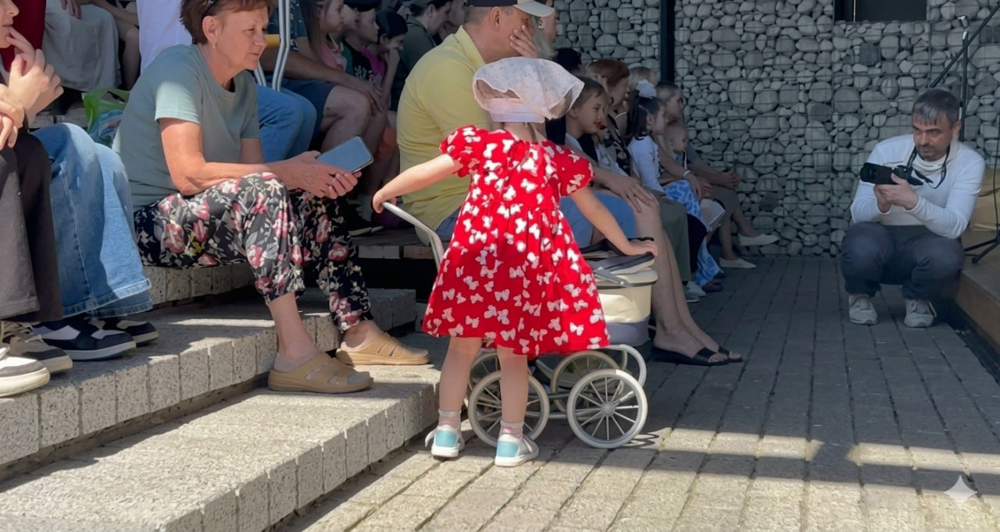
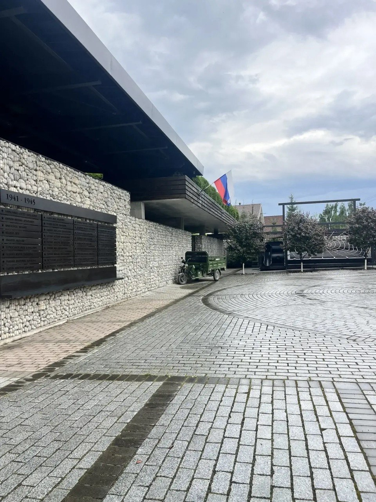
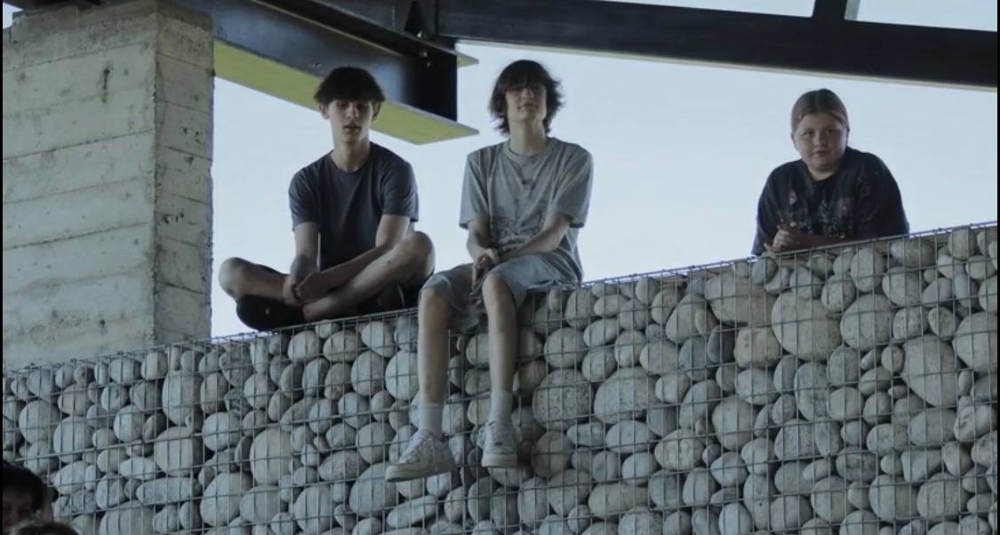
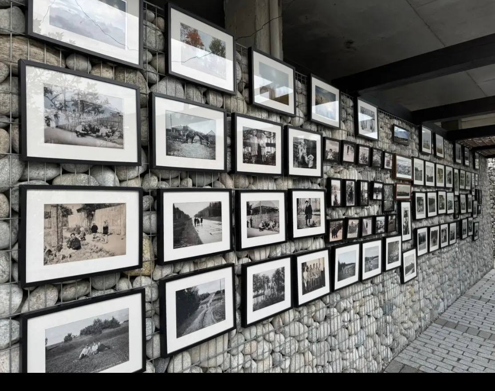

Эфир
Свитино ТВ
Видеосюжеты и репортажи о жизни посёлка.
Главная история · с 1945 года
После Великой Отечественной войны, с 1945 и до начала 1950-х, по выходным в Свитино приезжал киномеханик. Он натягивал экран между двух дубов и показывал жителям кино - дети и свободные от полевых работ взрослые приходили со стульчиками.
Это было первое знакомство деревни с кинематографом. Сегодня SVITINO.TV продолжает тот самый экран - спустя восемьдесят лет, уже как живая медиа-летопись посёлка.
На том экране показывали: «Броненосец Потёмкин», «Путёвку в жизнь», «Чапаева» и другие фильмы.


Видеосюжеты и репортажи о жизни посёлка.

Имена земляков, не вернувшихся с войны.

Наследие кинопоказов и новый документальный.

События и культурная жизнь Свитино.

Инициативы жителей и молодёжи.

Чёрно-белая летопись посёлка.
Светлой памяти жителей Свитино, павших в Великой Отечественной войне. Мы храним их имена и истории.
Открыть «Герои»